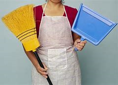

I really love playing soccer, this is nit the first spot I played but it is different
it makes me so happy, every time I play it I can't feel any tiredness it feel so great
and it makes me feel bette I play with my friends not just friends but my bestfriends
this sport is also our bonding with each other because the SHS life made us so busy
we have a lack of time with each other so soccer helped alot.

Household Choirs
I also clean our house, I am okay of doing this because I helped a lot in our family
, making the household choirs more faster and also as a part of the family and living on the house I
should keep the house clean.